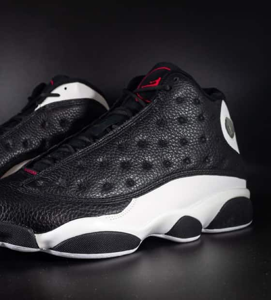
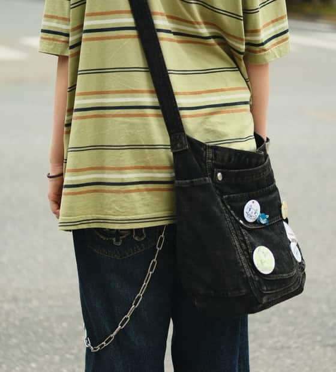
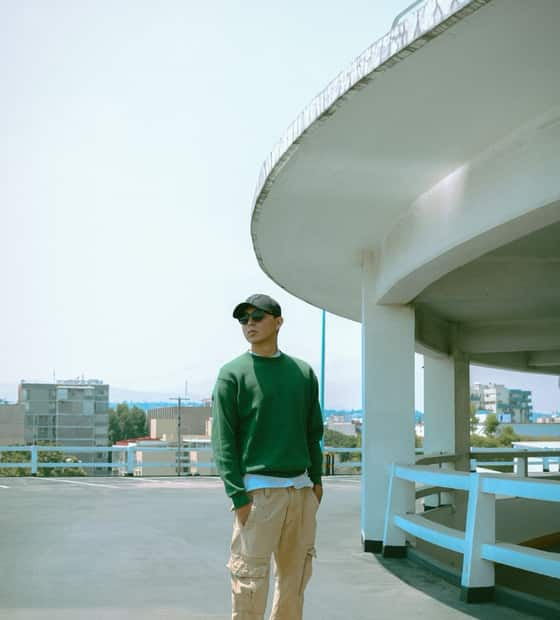
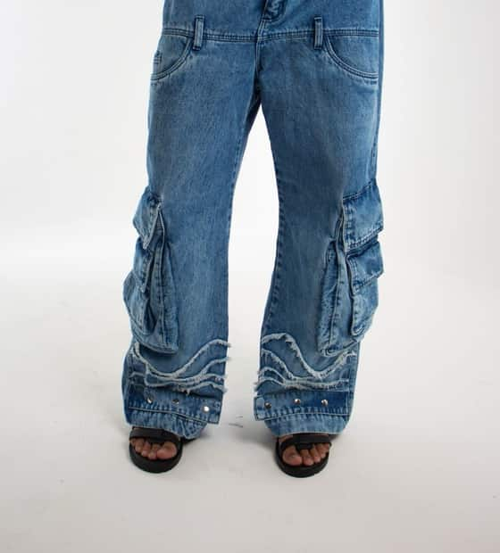

Le clic
La page envoie son choix au serveur.
Holberton School · Projet de fin d’année
Un radar pour les sorties des marques indépendantes
Les prochaines sorties de vêtements et de sneakers, réunies dans un catalogue clair. On choisit un rappel, puis on achète sur la boutique de la marque elle-même.
01
Le projet
Les marques indépendantes annoncent leurs sorties partout et nulle part. Drop Radar les met au même endroit, avec la date, le prix converti dans votre devise et un rappel avant l’ouverture.
Catalogue, recherche et filtres, trois régions et devises. Un membre choisit un rappel par e-mail ou sur le site, 24 h avant, 1 h avant ou à la sortie.
Fiche marque, logos, éditeur de drops. Un drop se publie sans relecture manuelle : les photos passent un contrôle automatique.
Publications des membres, signalements, masquage, réclamations et outils de l’administrateur, avec un historique complet.
Drop Radar ne vend rien. Chaque fiche renvoie vers la boutique de la marque, qui garde la vente et la relation avec ses clients.
Un clic, de bout en bout
Camille demande un rappel une heure avant une sortie.
La page envoie son choix au serveur.
Le serveur contrôle la session, l’origine et les données.
Une fonction de la base enregistre le rappel, et refuse si la sortie est passée.
« Rappel enregistré », ou la raison de l’échec.
Un nouveau clic relance la boucle
02
La stack
L’écran demande, le serveur vérifie, la base décide. Next.js sert les pages et l’API dans le même projet, et Supabase fait respecter les règles de chaque rôle. Le navigateur ne voit jamais la clé secrète.
Pages publiques, espaces privés et radar 3D.
Base, comptes, images et règles d’accès par rôle.
Tests à chaque couche, de la base au navigateur.
Hébergement gratuit, e-mails et sauvegardes chiffrées.
03
L’équipe
Chacun porte une zone du projet. Chaque tâche est relue par un collègue avant d’être validée, et les choix importants sont écrits dans un fichier de décisions.
Base de données · API · environnement
Comptes · sécurité · automatismes
Pages · espaces privés · administration
04
Le calendrier
29 sept – 2 oct
5 – 9 oct
12 – 16 oct
19 – 23 oct
26 – 30 oct
2 nov
29 sept – 2 oct
5 – 9 oct
12 – 16 oct
19 – 23 oct
26 – 30 oct
2 nov
Chaque sprint se termine par un résultat qu’on peut montrer. Chaque tâche est relue par un collègue avant d’être acceptée.
05
Les comptes
Un visiteur sans compte, et trois types de compte. Le rôle est lu en base à chaque action. Un compte bloqué perd l’accès à ses données privées et retrouve la vue d’un visiteur.
| Action | Visiteursans compte | Membre/community | Marque/brand/workspace | Admin/admin |
|---|---|---|---|---|
| Parcourir le catalogue, les marques, la communauté et le radar | Oui | Oui | Oui | Oui |
| Créer des rappels24 h avant, 1 h avant ou à la sortie | Non | Oui | Non | Non |
| Publier une photo dans la communautépour une marque : la sienne, une fois approuvée | Non | Oui | Oui | Non |
| Signaler un contenuavec un motif obligatoire | Non | Oui | Non | Non |
| Créer, publier, reporter, annuler ses dropsune fois la marque approuvée | Non | Non | Oui | Non |
| Ajouter logos et imagescontrôlées automatiquement | Non | Non | Oui | Non |
| Contester un drop masqué par l’admin | Non | Non | Oui | Non |
| Valider ou refuser une marqueavec un motif | Non | Non | Non | Oui |
| Masquer ou rétablir un drop, une publication, une photo | Non | Non | Non | Oui |
| Bloquer et débloquer un compte | Non | Non | Non | Oui |
| Traiter les signalements et les réclamations | Non | Non | Non | Oui |
| Lire le journal des modificationset le suivi des rappels | Non | Non | Non | Oui |
camille@drop-radar.testmarque1@drop-radar.test à marque15@…niko@drop-radar.testLes comptes d’essai existent seulement sur la base locale chargée avec les données d’exemple. Le mot de passe figure dans le guide d’installation du dépôt. Les états des marques d’essai varient : visible, masquée, en attente de validation.
06
Les drops
Six exemples inventés, avec les états que le site sait afficher. Faites défiler, puis essayez un rappel : les créneaux déjà passés sont grisés.
Démo locale : dates et états figés. Les rappels sont simulés dans cette page, sans enregistrement ni notification.

Bitume Club
Me rappeler
Atelier Nord
Me rappeler

Fil Rouge
Me rappeler

Coton Brut
Me rappeler

Dune Studio
Me rappeler
Echo Parade
Me rappeler
Marques, produits, prix et dates sont fictifs. Les photos sont des illustrations du dépôt (crédits dans la documentation des visuels) et ne représentent aucun produit réel. Un drop se crée en brouillon, se publie sans relecture, puis peut être reporté, annulé ou masqué par l’admin.